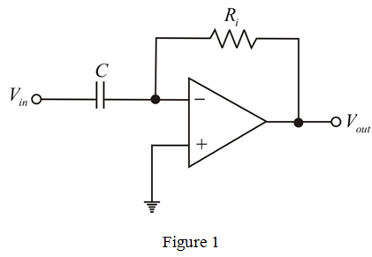

The loop gain of the amplifier is,
Substitute , and  in equation.
in equation.
The Circuit of a differentiator is shown in Figure 1.

The loop gain of the amplifier is,
Substitute , and in equation.
Finding the smallest differentiator time constant:

Substitute , in equation.
Therefore, the time constant of differentiator is .
Finding the phase margin of the differentiator:
At,
Therefore, the phase margin of the differentiator is  .
.
Finding the gain margin of the differentiator:
Further simplification as,
At a phase cross over frequency has falls down by and has rises by .
Therefore, the gain margin of the differentiator is  .
.